棋手风采集——记09全团赛炫飞队
#1 棋手风采集——记09全团赛炫飞队作者：炫飞冰弦 发表时间：2009-6-1 19:27:30
全家福
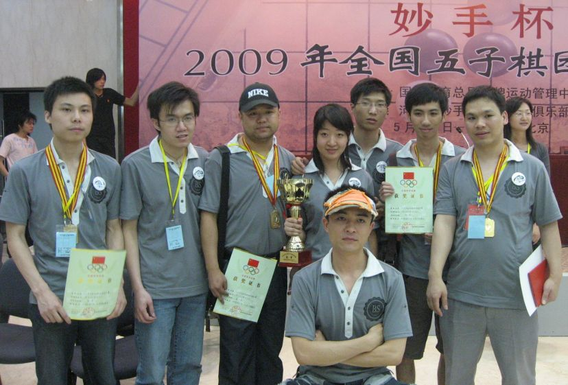
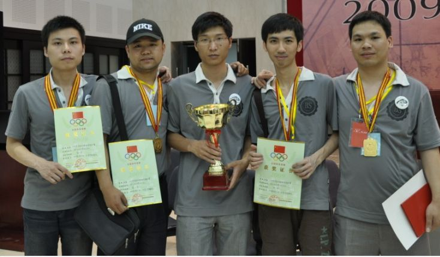
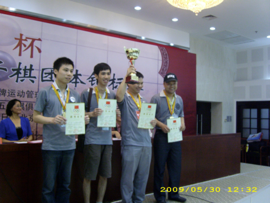
社徽（LOGO）
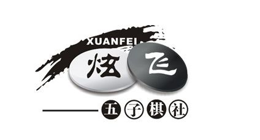
队服
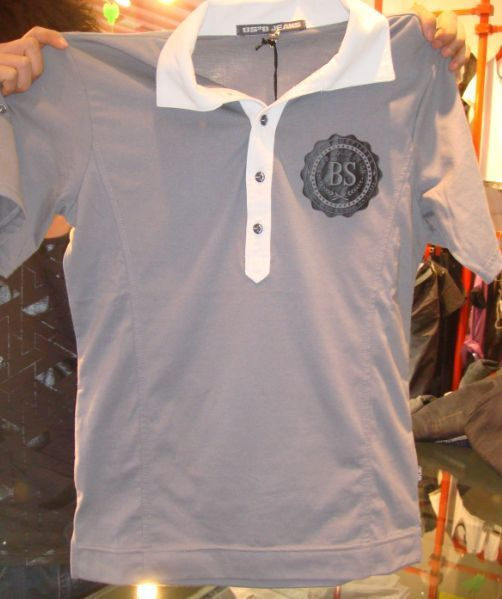
队徽
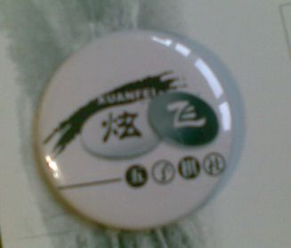
可爱的梦——张钟元
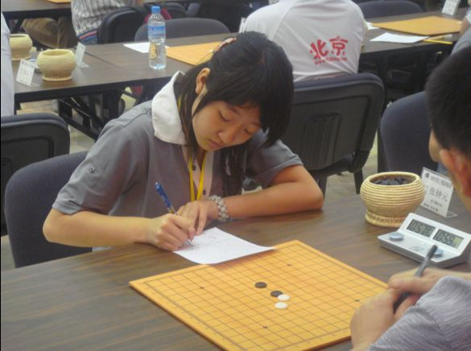
传说中的白痴——贺启发
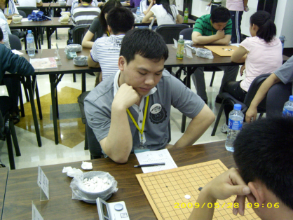
瘦瘦的清缘——黄立勤
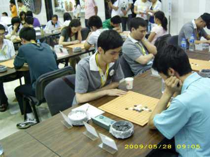
菜农大叔的风采——梁大伟
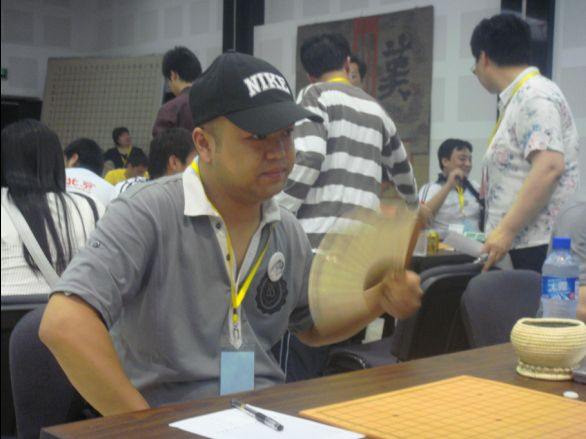
爱攻打伊拉克的无聊——谭鑫麟
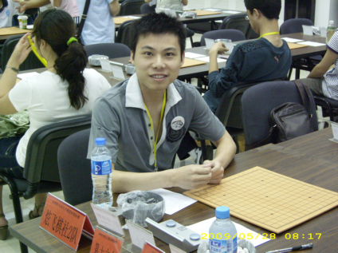
帅G潇洒——邱濰富

大家心目中的“风伯伯”——陈新
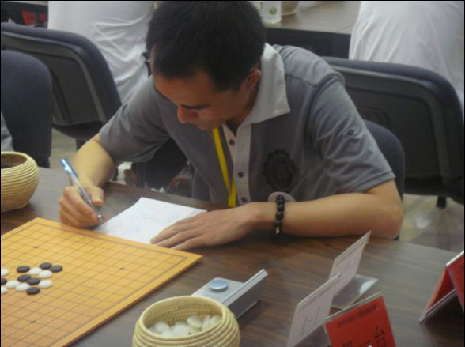
无敌教练“流逝”——龚胜
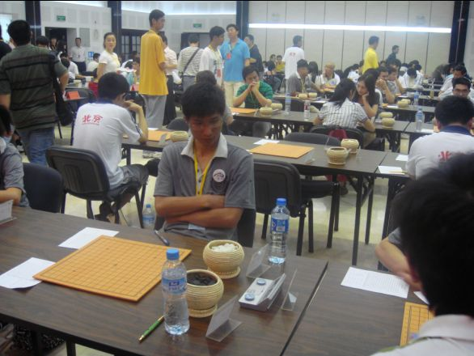
赛场一瞥
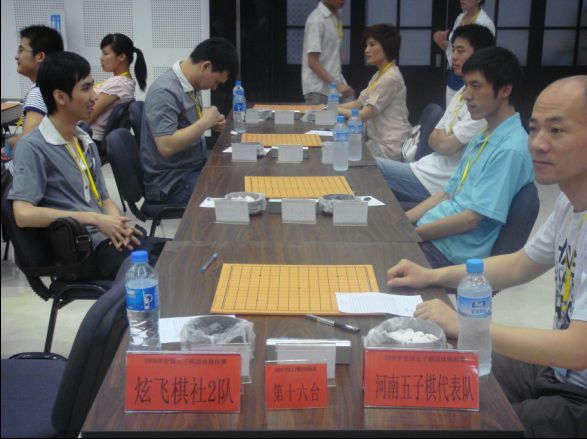
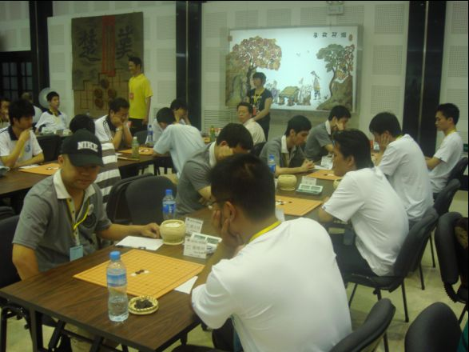
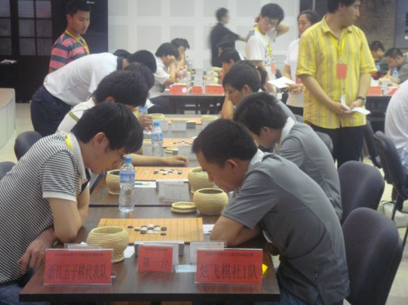
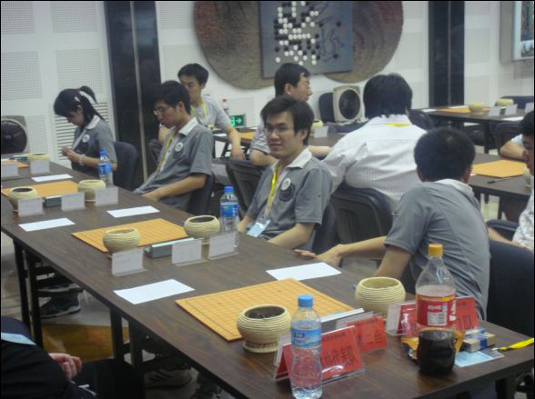
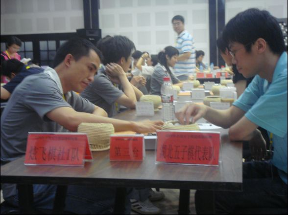
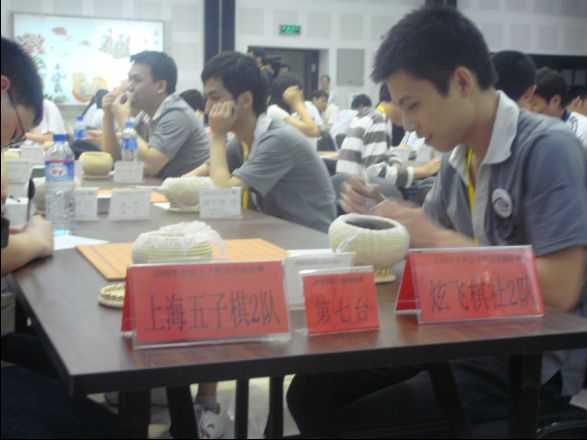
（特别感谢小眼睛、小鱼儿等N多群里朋友提供的照片。。。因为太多了，几百张，随机选了一小部分～～）
#2 Re:棋手风采集——09全团赛炫飞队作者：伊依 发表时间：2009-6-1 19:32:47
什么都好,拿了冠军更是高兴.就是觉得,下次比赛的时候,大灰狼你能不能长点肉啊?看着象个非洲难民似的
#3 Re:棋手风采集——记09全团赛炫飞队作者：簡單 发表时间：2009-6-1 20:11:37
不错,楼主辛苦了!
#4 Re:棋手风采集——记09全团赛炫飞队作者：流逝 发表时间：2009-6-1 20:12:52
 不能不顶的帖
不能不顶的帖#5 Re:棋手风采集——记09全团赛炫飞队作者：伊依 发表时间：2009-6-1 20:15:04
龚流表越来越帅了啊，我还是想摸摸菜大叔的光头，嘎嘎
#6 Re:棋手风采集——记09全团赛炫飞队作者：簡單 发表时间：2009-6-1 20:18:49
 流总的桃花痔好漂亮~~~~~~~~~~~~
流总的桃花痔好漂亮~~~~~~~~~~~~#7 Re:棋手风采集——记09全团赛炫飞队作者：流逝 发表时间：2009-6-1 20:19:56
 简单你大爷
简单你大爷#8 Re:棋手风采集——记09全团赛炫飞队作者：君亦 发表时间：2009-6-1 20:41:01
顶~~~~！！！！#9 Re:棋手风采集——记09全团赛炫飞队作者：老奶奶 发表时间：2009-6-1 21:12:06
 美人痣吧
美人痣吧#10 Re:棋手风采集——记09全团赛炫飞队作者：鬼见愁 发表时间：2009-6-2 8:55:14
不错,个个都很养眼.
#11 Re:棋手风采集——记09全团赛炫飞队作者：鬼见愁 发表时间：2009-6-2 8:59:59
弱弱的问一句,队服上的字母BS是什么意思啊,不如改成BT,蛮适合这些位大师#12 Re:棋手风采集——记09全团赛炫飞队作者：邓飞 发表时间：2009-6-2 9:27:27
恩,不错,个个都很风流倜傥 玉树临风....
另:这些大师们战场厮杀,神勇无敌的全团赛自战点评何时与观众见面啊,我们期待来自他们本人的真切述说.
#13 Re:棋手风采集——记09全团赛炫飞队作者：邓飞 发表时间：2009-6-2 9:33:03
见了贺老师的照片,好多人都说比以前胖了,难怪越来越聪明了
#14 Re:棋手风采集——记09全团赛炫飞队作者：炫飞花 发表时间：2009-6-2 9:54:38
 家里全是帅锅美女哦哦
家里全是帅锅美女哦哦#15 Re:棋手风采集——记09全团赛炫飞队作者：炫飞冰弦 发表时间：2009-6-2 10:27:51
回11楼：因为队服订的是“小魔鱼”的，小魔鱼英文缩写：BS2B。。。。
再回12楼飞飞：棋手们的自战解说近日将会一一发表。。狂汗啊，这些GGMM们写小结的时候个个都难产。。。这个要琢磨琢磨，那个要酝酿酝酿，都想模仿别人的，哪怕抄个开头瞄个结尾也好。。。
#16 Re:棋手风采集——记09全团赛炫飞队作者：魔戒 发表时间：2009-6-3 7:33:58
楼主辛苦了，眼睛MM辛苦了，家族最终取得冠军，一切的辛苦都是值得的！#17 Re:棋手风采集——记09全团赛炫飞队作者：越狱行辕 发表时间：2009-6-3 18:27:13
围棋棋盘？
#18 Re:棋手风采集——记09全团赛炫飞队作者：炫飞冰弦 发表时间：2009-6-3 18:53:16
不是15*15的么
#19 Re:棋手风采集——记09全团赛炫飞队作者：阿贝尔 发表时间：2009-6-3 19:19:20
哈哈哈哈~~~~~#20 Re:棋手风采集——记09全团赛炫飞队作者：炫飞兜兜 发表时间：2009-6-3 20:55:00
流大叔！！帅帅滴~！！！#21 Re:棋手风采集——记09全团赛炫飞队作者：老奶奶 发表时间：2009-6-3 22:00:08
风伯伯的帽子是不是梦的#22 Re:棋手风采集——记09全团赛炫飞队作者：邓飞 发表时间：2009-6-4 9:27:52
又过来瞻仰了一下风采#23 Re:棋手风采集——记09全团赛炫飞队作者：想飞的小巫婆 发表时间：2009-6-4 22:14:34
没想到无聊那么年轻，清缘那么瘦，潇洒那么英俊，风尘那么低调，梦那么可爱，流逝那么有责任感。。。。。。。
白痴是越来越胖越幽默了。。。。。
#24 Re:棋手风采集——记09全团赛炫飞队作者：茗弈求学 发表时间：2009-8-6 20:29:45
我啥时候能坐那去啊#25 Re:棋手风采集——记09全团赛炫飞队作者：棋癜 发表时间：2009-10-11 1:36:04
张钟元MM还不错，男的都没什么帅哥，难到帅哥的五子下的都不好吗#26 Re:老奶奶【==Re:棋手风采集——记09全团赛炫飞队==】作者：冰雪笑醉 发表时间：2012-9-12 16:03:53
咱这队服好看。